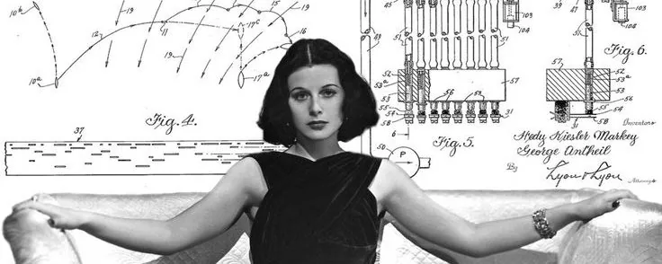

how to be good at research

nobody really teaches you research. you get a desk, a problem someone else picked, and a vague instruction to produce something novel. so most people reverse-engineer the job from what they can see, which is papers, threads, and announcements, and what they end up learning is how to look like a researcher rather than how to be one. the actual skill is a stack of smaller skills, and almost every one of them can be deliberately trained.
pick your own problems
richard hamming had a habit at bell labs that made him unpopular at lunch. he'd ask whoever sat near him what the important problems in their field were, then ask why they weren't working on them. people changed tables. the question stings because most of us have no good answer. we don't choose problems, we absorb them, from an advisor, from whatever a big lab announced last quarter, from the paper everyone is quote-tweeting this week.
the trouble with an absorbed problem is that you hold the conclusion without the reasoning. you know some famous lab cares about a direction, but not why, not what they expect to find, not what would make them drop it. when they pivot, you find out a year later. and on a problem that's already fashionable, you're racing a thousand people who started earlier and have more compute than you.
john schulman's guide to ml research splits the work into two modes. in one, you read the literature and hunt for things to improve. in the other, you choose an outcome you genuinely want to exist and reason backwards to the experiments. he argues for the second, and the quiet reason is that it manufactures originality. a goal you actually care about will drag you into territory no survey paper covers.
taste, meanwhile, gets discussed like a gift. it behaves more like a muscle. predict the result of every experiment before you run it. cover a paper's results section and guess the numbers from the method alone. mark down which of this month's releases will matter in two years and check your hit rate later. a forecast plus a correction, repeated a few hundred times, is how every good model gets trained, including the one in your head.
upgrade your inputs
shared reading lists produce shared ideas. if your information diet is the trending page of arxiv plus whatever survives the group chat filter, you will reliably reach the same conclusions as everyone else, at the same time, which makes those conclusions worth approximately nothing.
old material is criminally underpriced. this field reruns its own past on a delay: mixture of experts dates to 1991, lstms to 1997, backprop went mainstream in 1986. rich sutton needed about a thousand words in 2019 to write the bitter lesson, and it predicts the shape of the field better than surveys ten times its length. claude shannon gave a talk on creative thinking in 1952 where his opening move was to shrink a problem until it's nearly trivial, crack the small version, then reintroduce the difficulty one piece at a time. that single trick will carry you through more walls than any modern productivity advice.
range matters as much as depth. interpretability borrows shamelessly from neuroscience. eval design is mechanism design wearing a lab coat. a working sense of how gpus actually move memory tells you which architecture papers are doomed before the benchmarks do. and honest statistics might be the rarest skill in ml, where a lot of published rigor is vibes with error bars.
one more thing. read the paper itself, not the thread summarizing it. the appendix is where the bodies are buried, and the limitations section is usually the most honest paragraph in the document.
write everything down
paul graham points out that an idea can feel fully formed right up until you try to put it into words. the page finds gaps your head papers over: the assumption you never tested, the step that doesn't actually follow, the two claims that quietly contradict each other.
feynman's rule was that the first person you must avoid fooling is yourself, because you're the easiest target. writing is the cheapest defense ever invented. darwin went further and made it procedural. any fact that cut against his theory got written down on the spot, because he'd caught his own memory deleting inconvenient evidence faster than the convenient kind. your memory does the same thing to your failed runs. keep a log: hypothesis, setup, expectation, result, updated belief. rereading last month's entries is humbling in a way no reviewer can match.
then put some of it in public. olah and carter's research debt essay makes the case that fields choke on undigested ideas, and that a clear explanation is a genuine contribution rather than a service job. a lot of people working in interpretability today found the field through readable posts, not conference papers. a body of public writing also doubles as the strongest credential you can hold, because it's an unfakeable sample of how you think.
tighten the loop
the stories about alec radford rarely involve a single stroke of genius. they involve volume. more runs per day, more wrong ideas discarded per week, a model of reality that updated faster than anyone else's. that's the actual game. research speed is mostly the speed at which you discover you're wrong.
which makes tooling a first-class research activity. launching a run should be one command. plotting it should be one more. every experiment should be reproducible from its config, and comparing two runs should take seconds, not an afternoon of archaeology. karpathy's recipe for training neural networks has a step that pays for itself a hundred times over: overfit a single batch before training at scale. thirty seconds, half your bugs, gone. shrink everything until it's cheap, get it right, then spend the compute.
and retire the idea that engineering is the junior partner here. at the frontier the two jobs have fused. the researcher who can build the harness, the eval, and the data pipeline is the one whose hypotheses actually get tested. everyone else is waiting in a queue.
stare at the outputs
a descending loss curve is not analysis, it's reassurance. your experiments throw off far more information than you consume: transcripts, failure cases, the strange tail of the distribution. most of it dies unread in a logs folder.
karpathy's recipe starts before any training code gets written, with hours spent on the raw data by hand. most ml bugs live in the data, and they fail silently. nothing crashes. you simply get a mediocre model and a wrong theory about why.
andrew ng has taught the same unglamorous move for over a decade because nothing beats it. pull a hundred failures, read all of them, sort them into piles, attack the biggest pile. it works on models and it works on evals, where a benchmark you've never read transcripts from is a benchmark you don't actually understand. one transcript of genuinely strange behavior will teach you more than the next decimal of accuracy ever will.
wander on purpose
your first subfield is an accident of timing, so treat it like one. spend real time in interpretability, in evals, in rl, in systems, before deciding where you live. somewhere in this field is a corner where your specific weirdness is an unfair advantage, and the only way to locate it is to pay tuition in several places. nobody waives the tuition.
run the disposable version of every idea first and let most of them die young. tune your baselines until it hurts, because the graveyard of ml is full of gains that evaporated against a properly tuned baseline, and a reviewer is the worst possible person to learn that from. ablate until you know which component carries the result. it's usually one, and it's usually not the one in the title.
breadth is also insurance. subfields saturate, all of them, usually right after they peak on twitter. the people who keep producing through those transitions are the ones who already know their way around the neighboring territory.
find your people
hamming noticed a pattern in who ended up doing important work. colleagues with closed office doors got more done in any given year, and colleagues with open doors did the work that mattered, because the interruptions carried information about what the world actually needed. your open door is probably an inbox. keep it that way.
generosity compounds in research like nothing else. replicate a result and publish what you find. release the tool you built for yourself. explain something hard in plain language. the returns arrive sideways, months later, as the collaboration or the reference or the role you couldn't have applied for. float your half-formed ideas in public too, because being wrong on the timeline is far cheaper than being wrong in print. and the collaborator who tells you an idea is bad before you sink three months into it is worth more than compute. that relationship can't be bought, only earned.
the long game
pasteur said luck favors the prepared mind, and hamming built a whole career philosophy on top of it: knowledge and productivity compound like interest. the daily edges look trivial in isolation. what you read, what you record, how fast your loop runs, who you argue with. give them a few years and they produce careers that look like luck from the outside. start compounding earlier than feels necessary. future you already knows this was the cheap part.